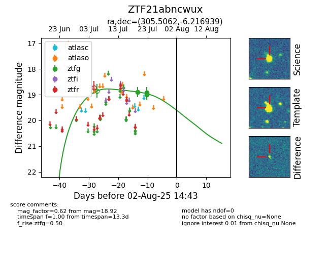

Target ZTF21abncwux at 2025-08-02 14:43, see:
FINK: fink-portal.org/ZTF21abncwux
Lasair: lasair-ztf.lsst.ac.uk/objects/ZTF21abncwux
ALeRCE: alerce.online/object/ZTF21abncwux
alt names
ZTF21abncwux (ztf,fink)
coordinates:
equatorial (ra, dec) = (305.5062,-6.21694)
galactic (l, b) = (37.8014,-22.95776)
photometry
last ztfg=18.92
3 ztfg detections
